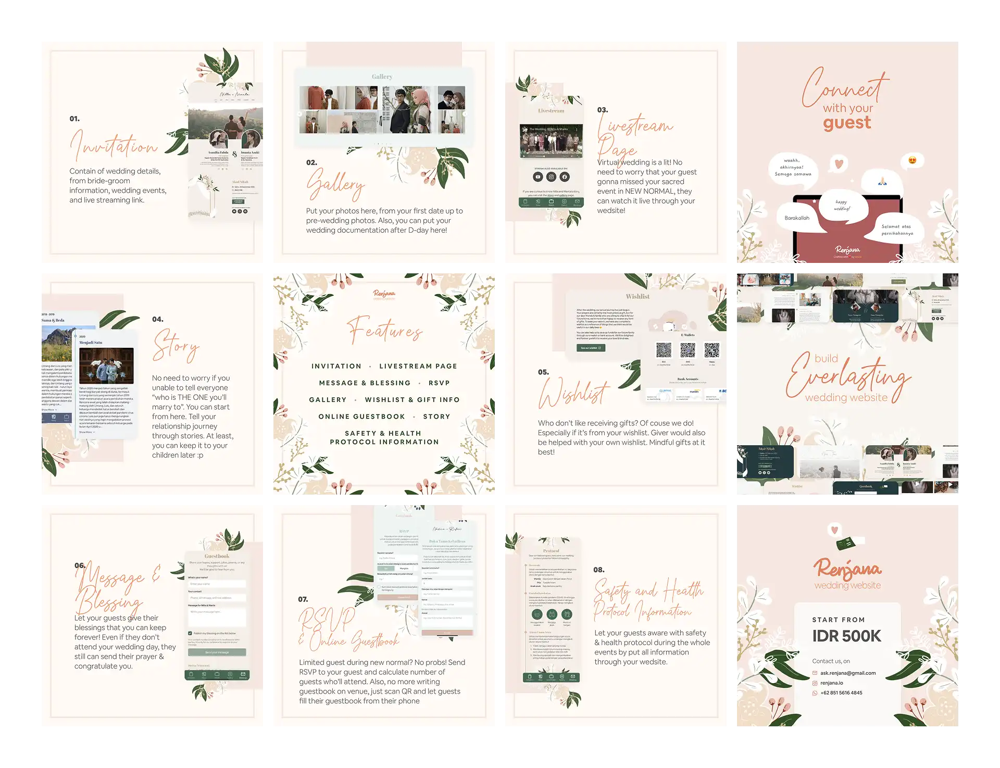
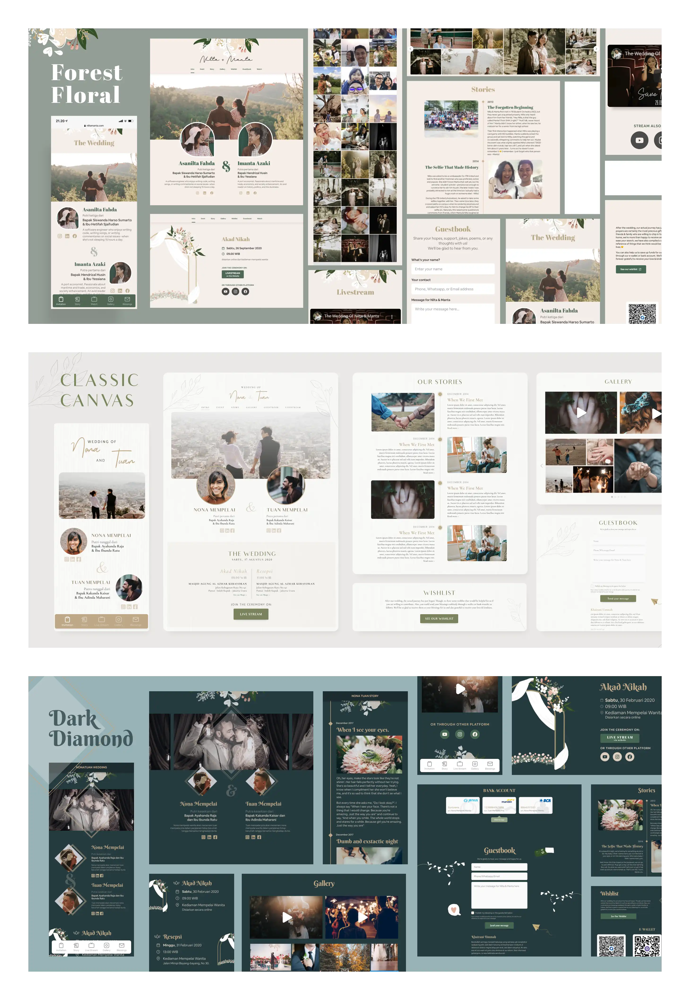
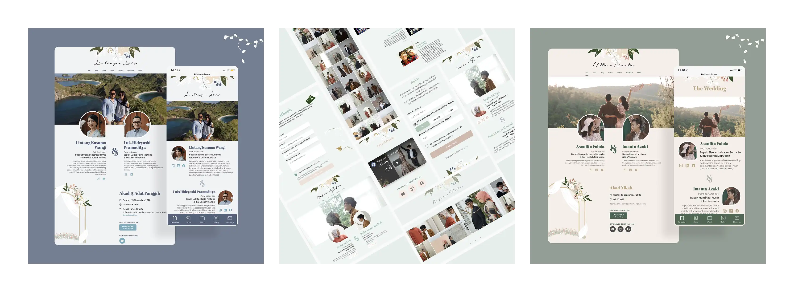

Renjana Wedding Website
Beautifully crafted Wedding Website that match with wedding theme and photoshoot.
- Category
- Product Development
- Period
- 2020 - 2021
- Role
- Product Designer and Account Executive
- Tools
- Figma, Figjam, Notion, Vercel
Renjana is a wedding website product developed and released by unoia.id Studio, a design studio focused on digital product development since 2020. It was the studio's first released product.
The product was designed around a simple product proposition: provide couples with a wedding website that feels visually distinctive while keeping important wedding information readable and accessible across desktop and mobile.
Product's Challenge
How might we improving the wedding invitation process for bride and groom so that the invitee can get more information about the wedding, from mandatory wedding information to the bride-groom love story
Product Development's Process
The development process followed Design Thinking principles, beginning with identifying current pain points and continuing through iterative improvement. Product features were developed and refined based on feedback and insights from clients using Renjana.
The process can be summarized as:
- Empathize — Find the product niche.
- Define — Determine the website direction.
- Ideate — Formulate features and the visual concept.
- Prototype — Design website themes and build the dashboard.
- Test & Implement — Acquire clients and gather feedback and insights.
The work combined visual design with product development and client-facing coordination. The project included the creation of multiple wedding website themes and a supporting dashboard, while client feedback became part of the ongoing product iteration cycle
The product was developed by a small team with shared ownership of the product. The team emphasized open discussion and collective problem-solving rather than limiting contributions strictly to individual responsibilities.
Team Structure
- Nurizka Fitrianingrum — Product Designer & Account Executive
- Khairani Ummah — Product Manager & Sales & Marketing
- Ongki Herlambang — Full-stack Developer & Dev Operations
Results
The core product is a dedicated wedding website that presents wedding information through a designed, personalized experience.
The website focuses on:
- Wedding-related information and event details
- Readable content presentation
- Personalized couple and invitation information
- Visual storytelling through photography and themed layouts
- Responsive presentation across desktop and mobile
Features

Themes

Example on Clients

Roles & Contribution
Roles
Product Designer and Account Executive
My responsibilities covered both product design and the coordination needed to bring the product to clients and external collaborators.
Key Activities
- Collaborated on defining and formulating product features.
- Designed the visual themes for the wedding websites.
- Created social media content.
- Acted as the liaison between clients and the internal team.
- Managed collaborations with external parties..
Learning & Takeaways
Renjana provided an opportunity to experiment with design and management tools that were previously unfamiliar, while working in a team where everyone shared a strong sense of ownership. The experience reinforced the value of collaborative problem-solving across product, design, and development responsibilities
Competencies-related
- Product & Project Management — Product feature formulation, client coordination, and external collaboration.
- Experience Design — Designing readable wedding experiences and visual themes across desktop and mobile.
- Digital Product Development — Contributing to the development and iteration of a released digital product.
- Technology Collaboration — Working closely with product and development roles throughout product iteration.